Voir le code source
# ---
# title: "NoteBook pour générer des beaux grapiques"
# author: Asmaa
# format: html
# ---# ---
# title: "NoteBook pour générer des beaux grapiques"
# author: Asmaa
# format: html
# ---Comparaison des performances insertion : 1 000 / 100 000 / 1 000 000 lignes
import psycopg2
import pandas as pd
import numpy as np
import matplotlib.pyplot as plt
import seaborn as sns
# Style global des graphiques
sns.set_theme(style="whitegrid", palette="muted")
plt.rcParams["figure.dpi"] = 110
plt.rcParams["axes.titlesize"] = 14
plt.rcParams["axes.labelsize"] = 12Connexion à la base de données
DB_CONFIG = {
"dbname": "test",
"user": "postgres",
"password": "1201",
"host": "localhost",
"port": "5432"
}
conn = psycopg2.connect(**DB_CONFIG)
cursor = conn.cursor()
print(" Connexion réussie") Connexion réussieChargement des données
query = """
SELECT
pt.name AS method,
t.time AS duration
FROM time t
JOIN push_type pt ON pt.push_id = t.push_id;
"""
df = pd.read_sql(query, conn)
print(f"Lignes chargées : {len(df):,}")
df.head()Lignes chargées : 330c:\Users\abide\anaconda3\lib\site-packages\pandas\io\sql.py:762: UserWarning: pandas only support SQLAlchemy connectable(engine/connection) ordatabase string URI or sqlite3 DBAPI2 connectionother DBAPI2 objects are not tested, please consider using SQLAlchemy
warnings.warn(| method | duration | |
|---|---|---|
| 0 | thousand_naive | 0.342629 |
| 1 | thousand_naive | 0.343203 |
| 2 | thousand_naive | 0.340084 |
| 3 | thousand_naive | 0.335102 |
| 4 | thousand_naive | 0.341335 |
Nettoyage et typage
df = df.dropna()
df["duration"] = df["duration"].astype(float)
print(df.info())
df.describe()<class 'pandas.core.frame.DataFrame'>
RangeIndex: 330 entries, 0 to 329
Data columns (total 2 columns):
# Column Non-Null Count Dtype
--- ------ -------------- -----
0 method 330 non-null object
1 duration 330 non-null float64
dtypes: float64(1), object(1)
memory usage: 5.3+ KB
None| duration | |
|---|---|
| count | 330.000000 |
| mean | 17.322007 |
| std | 44.923472 |
| min | 0.007643 |
| 25% | 0.330937 |
| 50% | 0.741668 |
| 75% | 10.861933 |
| max | 263.358773 |
Segmentation par volume
On filtre chaque sous-groupe à partir du nom de la méthode.
def filter_by_size(df, *keywords):
"""Garde les lignes dont le nom de méthode contient l'un des mots-clés."""
pattern = "|".join(keywords)
return df[df["method"].str.contains(pattern, case=False)].copy()
df_1k = df[df["method"].str.contains(r"1k|thousand", case=False)].copy()
df_100k = df[df["method"].str.contains(r"100k", case=False)].copy()
df_1m = df[df["method"].str.contains(r"1M", case=False)].copy()
print("1 000 lignes :", df_1k.shape)
print("100 000 lignes:", df_100k.shape)
print("1 M lignes :", df_1m.shape)1 000 lignes : (150, 2)
100 000 lignes: (100, 2)
1 M lignes : (80, 2)print(df["method"].unique())['thousand_naive' 'thousand_unique' 'Executemany 1k' 'Executemany 100k'
'Executemany 1M' 'Execute_batch 1k (page_size=100)'
'Execute_batch 100k (page_size=1000)'
'Execute_batch 100k (page_size=10000)'
'Execute_batch 1M (page_size=10000)' 'COPY Expert 1k' 'COPY Expert 100k'
'COPY Expert 1M' 'Pandas Default 1k' 'Pandas Multi 1k'
'Pandas Multi 100k' 'Pandas Multi 1M' 'Pandas Callable COPY 1k'
'Pandas Callable COPY 100k' 'Pandas Callable COPY 1M'
'COPY Stream Tuple 1k' 'COPY Stream Tuple 100k' 'COPY Stream Tuple 1M']Statistiques descriptives
summary = (
df.groupby("method")["duration"]
.agg(["count", "mean", "median", "std", "min", "max"])
.sort_values("mean")
.round(4)
)
summary| count | mean | median | std | min | max | |
|---|---|---|---|---|---|---|
| method | ||||||
| COPY Expert 1k | 10 | 0.0080 | 0.0080 | 0.0003 | 0.0076 | 0.0086 |
| COPY Stream Tuple 1k | 10 | 0.0110 | 0.0111 | 0.0011 | 0.0090 | 0.0126 |
| Execute_batch 1k (page_size=100) | 20 | 0.0260 | 0.0254 | 0.0024 | 0.0224 | 0.0321 |
| Pandas Callable COPY 1k | 10 | 0.0764 | 0.0589 | 0.0388 | 0.0558 | 0.1610 |
| Executemany 1k | 20 | 0.1112 | 0.1113 | 0.0021 | 0.1052 | 0.1138 |
| Pandas Default 1k | 10 | 0.1840 | 0.1643 | 0.0407 | 0.1584 | 0.2683 |
| thousand_naive | 30 | 0.3415 | 0.3415 | 0.0052 | 0.3305 | 0.3513 |
| thousand_unique | 30 | 0.3459 | 0.3454 | 0.0048 | 0.3359 | 0.3538 |
| Pandas Multi 1k | 10 | 0.3750 | 0.3509 | 0.0556 | 0.3209 | 0.4699 |
| COPY Expert 100k | 10 | 0.5654 | 0.5660 | 0.0225 | 0.5239 | 0.6032 |
| COPY Stream Tuple 100k | 10 | 0.7524 | 0.7417 | 0.0404 | 0.7237 | 0.8597 |
| Pandas Callable COPY 100k | 10 | 0.8749 | 0.8721 | 0.0058 | 0.8708 | 0.8860 |
| Execute_batch 100k (page_size=10000) | 20 | 2.0398 | 2.0281 | 0.0352 | 1.9950 | 2.1100 |
| Execute_batch 100k (page_size=1000) | 20 | 2.2308 | 2.2199 | 0.0582 | 2.1488 | 2.3969 |
| COPY Expert 1M | 10 | 6.2233 | 6.2237 | 0.0474 | 6.1422 | 6.2957 |
| COPY Stream Tuple 1M | 10 | 7.3633 | 7.3685 | 0.1010 | 7.1889 | 7.4761 |
| Pandas Callable COPY 1M | 10 | 10.9214 | 11.9056 | 1.6273 | 8.7131 | 12.3476 |
| Executemany 100k | 20 | 12.0304 | 12.3167 | 0.7315 | 10.5943 | 12.9460 |
| Execute_batch 1M (page_size=10000) | 20 | 20.5986 | 20.4524 | 0.4201 | 20.0250 | 21.7282 |
| Pandas Multi 100k | 10 | 28.7033 | 28.7861 | 1.0116 | 26.9354 | 30.1520 |
| Executemany 1M | 20 | 111.5211 | 123.4217 | 33.2851 | 6.2907 | 126.1339 |
| Pandas Multi 1M | 10 | 216.3897 | 208.7518 | 18.0945 | 204.4680 | 263.3588 |
Visualisations comparatives
Temps moyen par méthode (barplot)
plt.figure(figsize=(12, 5))
sns.barplot(data=df, x="method", y="duration", estimator="mean", errorbar="sd")
plt.title("Temps moyen d'insertion par méthode")
plt.xlabel("Méthode")
plt.ylabel("Temps moyen")
plt.xticks(rotation=45, ha="right")
plt.tight_layout()
plt.show()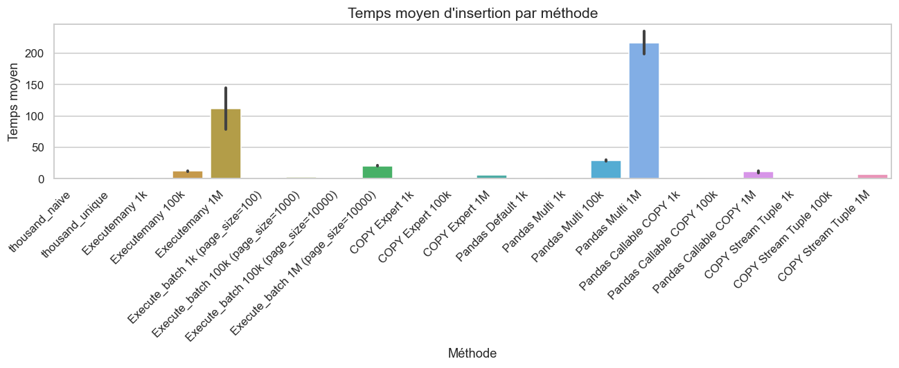
ECDF comparatif (toutes méthodes)
def ecdf(data):
"""Retourne les coordonnées (x, y) de la fonction de répartition empirique."""
x = np.sort(data)
y = np.arange(1, len(x) + 1) / len(x)
return x, y
plt.figure(figsize=(12, 6))
for method in df["method"].dropna().unique():
subset = df[df["method"] == method]["duration"].dropna()
if len(subset) < 5:
continue
x, y = ecdf(subset)
plt.plot(x, y, linewidth=2, label=method)
plt.title("ECDF comparatif des performances (toutes méthodes)")
plt.xlabel("Temps d'exécution")
plt.ylabel("Probabilité cumulée")
plt.legend(bbox_to_anchor=(1.05, 1), loc="upper left")
plt.grid(True, linestyle="--", alpha=0.5)
plt.tight_layout()
plt.show()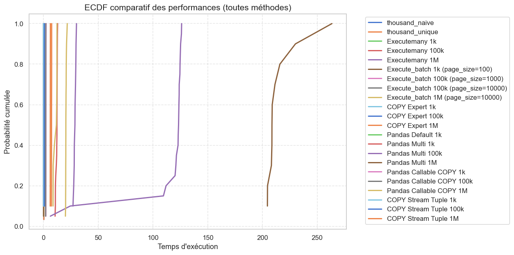
mean_df = df.groupby("method", as_index=False)["duration"].mean().sort_values("duration")
plt.figure(figsize=(12, 5))
sns.lineplot(data=mean_df, x="method", y="duration", marker="o", linewidth=2)
plt.title("Comparaison des performances moyennes")
plt.xlabel("Méthode")
plt.ylabel("Temps moyen")
plt.xticks(rotation=45, ha="right")
plt.grid(True, linestyle="--", alpha=0.5)
plt.tight_layout()
plt.show()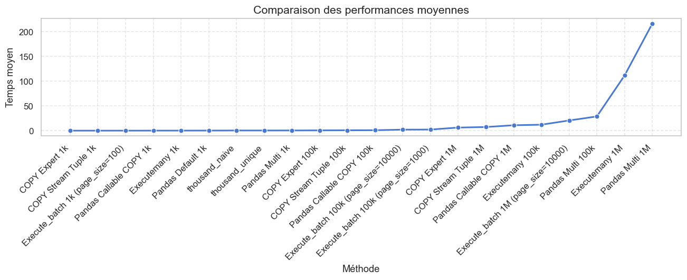
On visualise comment chaque méthode se comporte selon la taille du jeu de données.
# Ajout d'un libellé de volume pour chaque sous-groupe
df_1k["volume"] = "1 000"
df_100k["volume"] = "100 000"
df_1m["volume"] = "1 000 000"
df_all = pd.concat([df_1k, df_100k, df_1m], ignore_index=True)
# Ordre logique des volumes
df_all["volume"] = pd.Categorical(
df_all["volume"],
categories=["1 000", "100 000", "1 000 000"],
ordered=True
)
# Barplot horizontal — classement final
plt.figure(figsize=(12, 5))
ranked = summary["mean"].sort_values() * 1000
bars = plt.barh(ranked.index[::-1], ranked.values[::-1],
color=plt.cm.tab10.colors[:len(ranked)])
for bar in bars:
plt.text(bar.get_width() + 0.1, bar.get_y() + bar.get_height() / 2,
f"{bar.get_width():.1f} ms", va="center", fontsize=9)
plt.title("Classement des méthodes — 1 000 lignes")
plt.xlabel("Temps moyen (ms)")
plt.grid(axis="x", linestyle="--", alpha=0.4)
plt.tight_layout()
plt.show()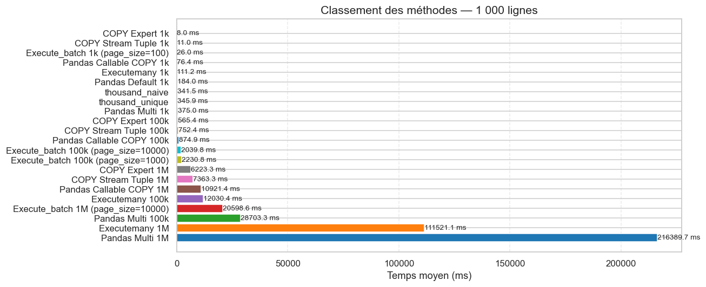
Classement final des méthodes
ranking = summary[["mean", "median", "std"]].sort_values("mean")
# Ajout d'un rang
ranking.insert(0, "rang", range(1, len(ranking) + 1))
print(" Classement des méthodes (du plus rapide au plus lent)")
ranking Classement des méthodes (du plus rapide au plus lent)| rang | mean | median | std | |
|---|---|---|---|---|
| method | ||||
| COPY Expert 1k | 1 | 0.0080 | 0.0080 | 0.0003 |
| COPY Stream Tuple 1k | 2 | 0.0110 | 0.0111 | 0.0011 |
| Execute_batch 1k (page_size=100) | 3 | 0.0260 | 0.0254 | 0.0024 |
| Pandas Callable COPY 1k | 4 | 0.0764 | 0.0589 | 0.0388 |
| Executemany 1k | 5 | 0.1112 | 0.1113 | 0.0021 |
| Pandas Default 1k | 6 | 0.1840 | 0.1643 | 0.0407 |
| thousand_naive | 7 | 0.3415 | 0.3415 | 0.0052 |
| thousand_unique | 8 | 0.3459 | 0.3454 | 0.0048 |
| Pandas Multi 1k | 9 | 0.3750 | 0.3509 | 0.0556 |
| COPY Expert 100k | 10 | 0.5654 | 0.5660 | 0.0225 |
| COPY Stream Tuple 100k | 11 | 0.7524 | 0.7417 | 0.0404 |
| Pandas Callable COPY 100k | 12 | 0.8749 | 0.8721 | 0.0058 |
| Execute_batch 100k (page_size=10000) | 13 | 2.0398 | 2.0281 | 0.0352 |
| Execute_batch 100k (page_size=1000) | 14 | 2.2308 | 2.2199 | 0.0582 |
| COPY Expert 1M | 15 | 6.2233 | 6.2237 | 0.0474 |
| COPY Stream Tuple 1M | 16 | 7.3633 | 7.3685 | 0.1010 |
| Pandas Callable COPY 1M | 17 | 10.9214 | 11.9056 | 1.6273 |
| Executemany 100k | 18 | 12.0304 | 12.3167 | 0.7315 |
| Execute_batch 1M (page_size=10000) | 19 | 20.5986 | 20.4524 | 0.4201 |
| Pandas Multi 100k | 20 | 28.7033 | 28.7861 | 1.0116 |
| Executemany 1M | 21 | 111.5211 | 123.4217 | 33.2851 |
| Pandas Multi 1M | 22 | 216.3897 | 208.7518 | 18.0945 |
###Visualisation des 1000
# Barplot — temps moyen par méthode (1 000 lignes)
plt.figure(figsize=(12, 5))
summary_1k = df_1k.groupby("method")["duration"].mean().sort_values() * 1000
bars = plt.bar(summary_1k.index, summary_1k.values,
color=plt.cm.tab10.colors[:len(summary_1k)], edgecolor="white")
for bar in bars:
plt.text(bar.get_x() + bar.get_width() / 2,
bar.get_height() + 0.2,
f"{bar.get_height():.1f} ms", ha="center", va="bottom", fontsize=9)
plt.title("Temps moyen par méthode — 1 000 lignes")
plt.ylabel("Temps moyen (ms)")
plt.xticks(rotation=40, ha="right")
plt.grid(axis="y", linestyle="--", alpha=0.4)
plt.tight_layout()
plt.show()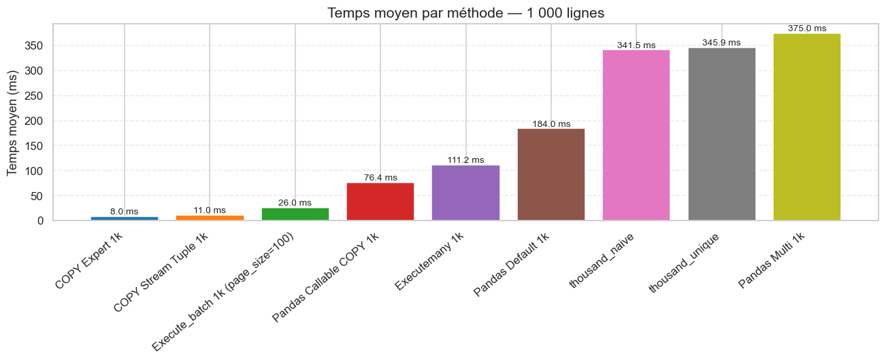
# Classement final (1 000 lignes)
plt.figure(figsize=(12, 5))
ranked_1k = df_1k.groupby("method")["duration"].mean().sort_values() * 1000
bars = plt.barh(ranked_1k.index[::-1], ranked_1k.values[::-1],
color=plt.cm.tab10.colors[:len(ranked_1k)])
for bar in bars:
plt.text(bar.get_width() + 0.1, bar.get_y() + bar.get_height() / 2,
f"{bar.get_width():.1f} ms", va="center", fontsize=9)
plt.title("Classement des méthodes — 1 000 lignes")
plt.xlabel("Temps moyen (ms)")
plt.grid(axis="x", linestyle="--", alpha=0.4)
plt.tight_layout()
plt.show()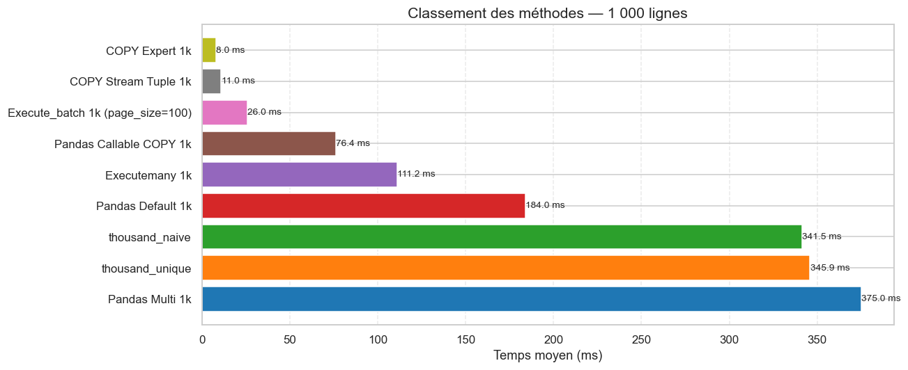
100000
ranking_100k = (
df_100k.groupby("method")["duration"]
.agg(
essais="count",
moyenne="mean",
mediane="median",
ecart_type="std",
minimum="min",
maximum="max"
)
.sort_values("moyenne")
.round(4)
)
ranking_100k| essais | moyenne | mediane | ecart_type | minimum | maximum | |
|---|---|---|---|---|---|---|
| method | ||||||
| COPY Expert 100k | 10 | 0.5654 | 0.5660 | 0.0225 | 0.5239 | 0.6032 |
| COPY Stream Tuple 100k | 10 | 0.7524 | 0.7417 | 0.0404 | 0.7237 | 0.8597 |
| Pandas Callable COPY 100k | 10 | 0.8749 | 0.8721 | 0.0058 | 0.8708 | 0.8860 |
| Execute_batch 100k (page_size=10000) | 20 | 2.0398 | 2.0281 | 0.0352 | 1.9950 | 2.1100 |
| Execute_batch 100k (page_size=1000) | 20 | 2.2308 | 2.2199 | 0.0582 | 2.1488 | 2.3969 |
| Executemany 100k | 20 | 12.0304 | 12.3167 | 0.7315 | 10.5943 | 12.9460 |
| Pandas Multi 100k | 10 | 28.7033 | 28.7861 | 1.0116 | 26.9354 | 30.1520 |
import matplotlib.pyplot as plt
ranking_plot = ranking_100k.reset_index()
plt.figure(figsize=(12,6))
plt.plot(
ranking_plot["method"],
ranking_plot["moyenne"],
marker="o",
linewidth=2
)
for x, y in zip(ranking_plot["method"], ranking_plot["moyenne"]):
plt.annotate(
f"{y:.3f}",
(x, y),
textcoords="offset points",
xytext=(0, 8),
ha="center"
)
plt.title("Classement des méthodes - 100 000 lignes")
plt.xlabel("Méthode")
plt.ylabel("Temps moyen")
plt.xticks(rotation=45)
plt.grid(True, linestyle="--", alpha=0.5)
plt.tight_layout()
plt.show()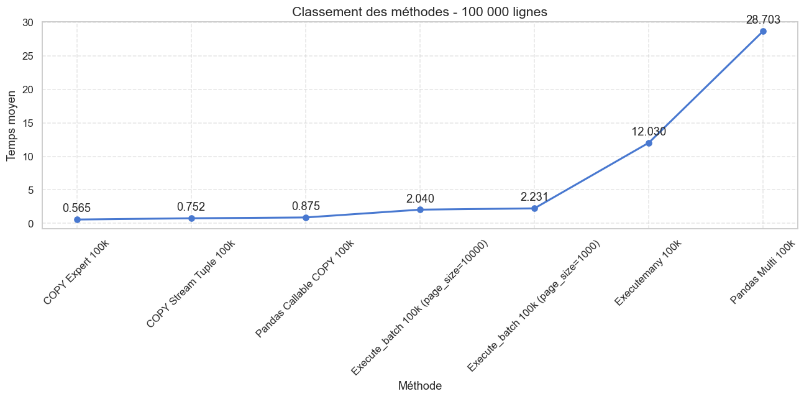
1000000
ranking_1m = (
df_1m.groupby("method")["duration"]
.agg(
essais="count",
moyenne="mean",
mediane="median",
ecart_type="std",
minimum="min",
maximum="max"
)
.sort_values("moyenne")
)
ranking_1m| essais | moyenne | mediane | ecart_type | minimum | maximum | |
|---|---|---|---|---|---|---|
| method | ||||||
| COPY Expert 1M | 10 | 6.223305 | 6.223749 | 0.047352 | 6.142195 | 6.295719 |
| COPY Stream Tuple 1M | 10 | 7.363280 | 7.368511 | 0.100982 | 7.188858 | 7.476091 |
| Pandas Callable COPY 1M | 10 | 10.921383 | 11.905639 | 1.627252 | 8.713129 | 12.347599 |
| Execute_batch 1M (page_size=10000) | 20 | 20.598630 | 20.452403 | 0.420111 | 20.024968 | 21.728159 |
| Executemany 1M | 20 | 111.521114 | 123.421678 | 33.285066 | 6.290718 | 126.133935 |
| Pandas Multi 1M | 10 | 216.389744 | 208.751754 | 18.094474 | 204.467974 | 263.358773 |
ranking_1m = ranking_1m.round(4)
ranking_1m| essais | moyenne | mediane | ecart_type | minimum | maximum | |
|---|---|---|---|---|---|---|
| method | ||||||
| COPY Expert 1M | 10 | 6.2233 | 6.2237 | 0.0474 | 6.1422 | 6.2957 |
| COPY Stream Tuple 1M | 10 | 7.3633 | 7.3685 | 0.1010 | 7.1889 | 7.4761 |
| Pandas Callable COPY 1M | 10 | 10.9214 | 11.9056 | 1.6273 | 8.7131 | 12.3476 |
| Execute_batch 1M (page_size=10000) | 20 | 20.5986 | 20.4524 | 0.4201 | 20.0250 | 21.7282 |
| Executemany 1M | 20 | 111.5211 | 123.4217 | 33.2851 | 6.2907 | 126.1339 |
| Pandas Multi 1M | 10 | 216.3897 | 208.7518 | 18.0945 | 204.4680 | 263.3588 |
import matplotlib.pyplot as plt
ranking_plot = ranking_1m.reset_index()
plt.figure(figsize=(12,6))
plt.plot(
ranking_plot["method"],
ranking_plot["moyenne"],
marker="o",
linewidth=2
)
for x, y in zip(ranking_plot["method"], ranking_plot["moyenne"]):
plt.annotate(
f"{y:.3f}",
(x, y),
textcoords="offset points",
xytext=(0, 8),
ha="center"
)
plt.title("Classement des méthodes - 1 000 000 lignes")
plt.xlabel("Méthode")
plt.ylabel("Temps moyen")
plt.xticks(rotation=45)
plt.grid(True, linestyle="--", alpha=0.5)
plt.tight_layout()
plt.show()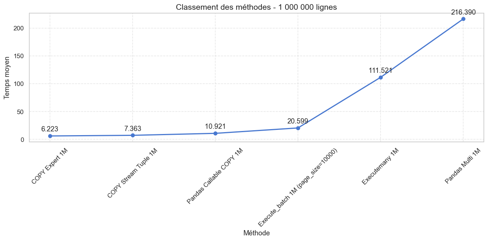
best_time = ranking_1m["moyenne"].min()
ranking_1m["ratio_vs_best"] = (
ranking_1m["moyenne"] / best_time
)
ranking_1m.sort_values("ratio_vs_best")| essais | moyenne | mediane | ecart_type | minimum | maximum | ratio_vs_best | |
|---|---|---|---|---|---|---|---|
| method | |||||||
| COPY Expert 1M | 10 | 6.2233 | 6.2237 | 0.0474 | 6.1422 | 6.2957 | 1.000000 |
| COPY Stream Tuple 1M | 10 | 7.3633 | 7.3685 | 0.1010 | 7.1889 | 7.4761 | 1.183183 |
| Pandas Callable COPY 1M | 10 | 10.9214 | 11.9056 | 1.6273 | 8.7131 | 12.3476 | 1.754921 |
| Execute_batch 1M (page_size=10000) | 20 | 20.5986 | 20.4524 | 0.4201 | 20.0250 | 21.7282 | 3.309916 |
| Executemany 1M | 20 | 111.5211 | 123.4217 | 33.2851 | 6.2907 | 126.1339 | 17.919930 |
| Pandas Multi 1M | 10 | 216.3897 | 208.7518 | 18.0945 | 204.4680 | 263.3588 | 34.770893 |
Tableau recapitulatif
# Tableau récapitulatif : méthode × taille → temps médian
m1k = df_1k.groupby("method")["duration"].median() * 1000
m100k = df_100k.groupby("method")["duration"].median() * 1000
m1m = df_1m.groupby("method")["duration"].median() * 1000
tableau = pd.concat([m1k, m100k, m1m], axis=1, keys=["1 000", "100 000", "1 000 000"]).round(2)
tableau| 1 000 | 100 000 | 1 000 000 | |
|---|---|---|---|
| method | |||
| COPY Expert 1k | 7.97 | NaN | NaN |
| COPY Stream Tuple 1k | 11.10 | NaN | NaN |
| Execute_batch 1k (page_size=100) | 25.39 | NaN | NaN |
| Executemany 1k | 111.34 | NaN | NaN |
| Pandas Callable COPY 1k | 58.94 | NaN | NaN |
| Pandas Default 1k | 164.29 | NaN | NaN |
| Pandas Multi 1k | 350.85 | NaN | NaN |
| thousand_naive | 341.46 | NaN | NaN |
| thousand_unique | 345.45 | NaN | NaN |
| COPY Expert 100k | NaN | 566.03 | NaN |
| COPY Stream Tuple 100k | NaN | 741.67 | NaN |
| Execute_batch 100k (page_size=1000) | NaN | 2219.92 | NaN |
| Execute_batch 100k (page_size=10000) | NaN | 2028.10 | NaN |
| Executemany 100k | NaN | 12316.67 | NaN |
| Pandas Callable COPY 100k | NaN | 872.06 | NaN |
| Pandas Multi 100k | NaN | 28786.12 | NaN |
| COPY Expert 1M | NaN | NaN | 6223.75 |
| COPY Stream Tuple 1M | NaN | NaN | 7368.51 |
| Execute_batch 1M (page_size=10000) | NaN | NaN | 20452.40 |
| Executemany 1M | NaN | NaN | 123421.68 |
| Pandas Callable COPY 1M | NaN | NaN | 11905.64 |
| Pandas Multi 1M | NaN | NaN | 208751.75 |
Les representations attendu du Brief
import re
# On ajoute une colonne "taille" et une colonne "famille" (nom sans la taille)
df["taille"] = df["method"].apply(
lambda m: 1_000 if re.search(r"1k|thousand", m, re.IGNORECASE)
else 100_000 if re.search(r"100k", m, re.IGNORECASE)
else 1_000_000
)
df["famille"] = df["method"].str.replace(r"\s*(1k|100k|1M).*", "", regex=True)
# Médiane par famille et par taille
medianes = df.groupby(["famille", "taille"])["duration"].median().unstack()
plt.figure(figsize=(12, 6))
for famille in medianes.index:
plt.plot(medianes.columns, medianes.loc[famille], marker="o", label=famille)
plt.title("Temps médian en fonction de la taille")
plt.xlabel("Nombre de lignes")
plt.ylabel("Temps médian")
plt.xticks([1_000, 100_000, 1_000_000], ["1 000", "100 000", "1 000 000"])
plt.legend(bbox_to_anchor=(1.05, 1), loc="upper left", fontsize=9)
plt.grid(True, linestyle="--", alpha=0.4)
plt.tight_layout()
plt.show()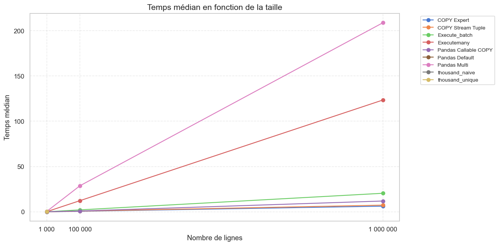
import re
# On ajoute une colonne "taille" et une colonne "famille" (nom sans la taille)
df["taille"] = df["method"].apply(
lambda m: 1_000 if re.search(r"1k|thousand", m, re.IGNORECASE)
else 100_000 if re.search(r"100k", m, re.IGNORECASE)
else 1_000_000
)
df["famille"] = df["method"].str.replace(r"\s*(1k|100k|1M).*", "", regex=True)
# Médiane par famille et par taille
medianes = df.groupby(["famille", "taille"])["duration"].median().unstack() * 1000
plt.figure(figsize=(12, 6))
for famille in medianes.index:
plt.plot(medianes.columns, medianes.loc[famille], marker="o", label=famille)
plt.xscale("log")
plt.yscale("log")
plt.title("Temps médian en fonction de la taille (échelle log/log)")
plt.xlabel("Nombre de lignes")
plt.ylabel("Temps médian")
plt.xticks([1_000, 100_000, 1_000_000], ["1 000", "100 000", "1 000 000"])
plt.legend(bbox_to_anchor=(1.05, 1), loc="upper left", fontsize=9)
plt.grid(True, linestyle="--", alpha=0.4)
plt.tight_layout()
plt.show()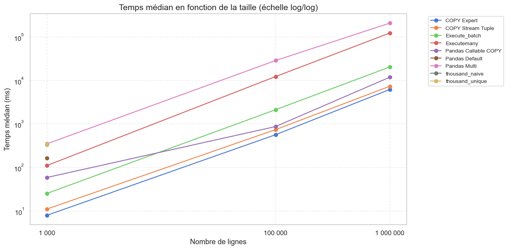
plt.figure(figsize=(12, 6))
tailles = {
"1 000": df_1k,
"100 000": df_100k,
"1 000 000": df_1m,
}
for label, subset in tailles.items():
means = subset.groupby("method")["duration"].median().sort_values() * 1000
plt.plot(range(len(means)), means.values, marker="o", label=label, linewidth=2)
plt.title("Comparaison des performances par volume")
plt.xlabel("Méthode (classée par temps croissant)")
plt.ylabel("Temps médian (ms)")
plt.yscale("log")
plt.legend(title="Volume")
plt.grid(True, linestyle="--", alpha=0.4)
plt.tight_layout()
plt.show()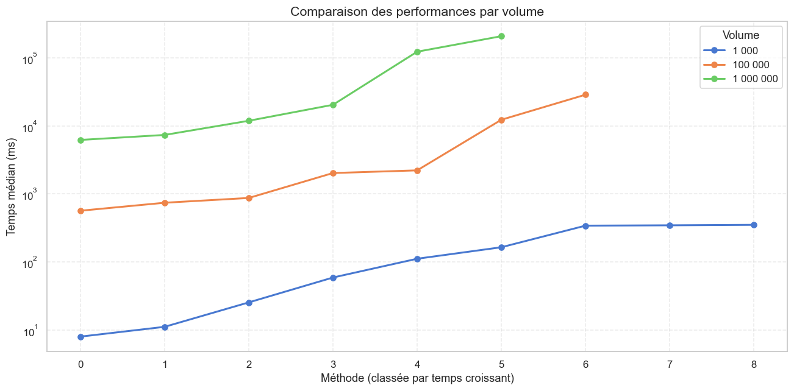
plt.figure(figsize=(12, 6))
tailles = {
"1 000": df_1k,
"100 000": df_100k,
"1 000 000": df_1m,
}
for label, subset in tailles.items():
means = subset.groupby("method")["duration"].median().sort_values()
plt.plot(range(len(means)), means.values, marker="o", label=label, linewidth=2)
plt.title("Comparaison des performances par volume")
plt.xlabel("Méthode (classée par temps croissant)")
plt.ylabel("Temps médian")
plt.legend(title="Volume")
plt.grid(True, linestyle="--", alpha=0.4)
plt.tight_layout()
plt.show()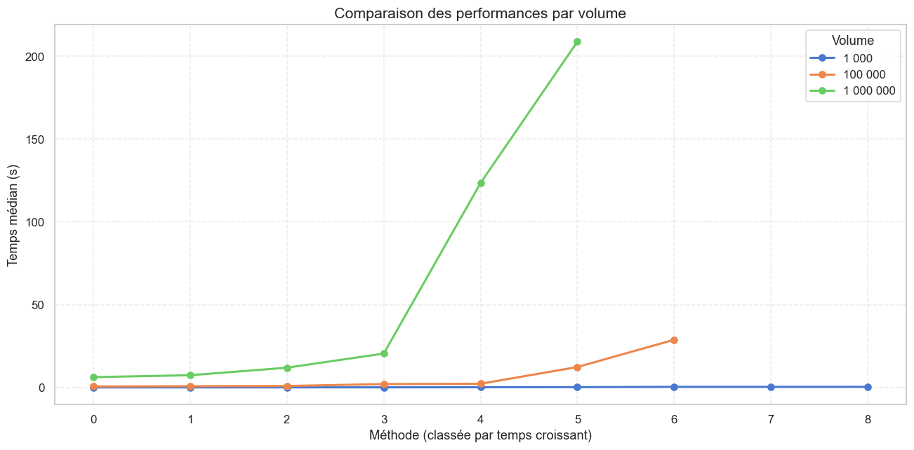
cursor.close()
conn.close()
print(" Connexion fermée") Connexion fermée